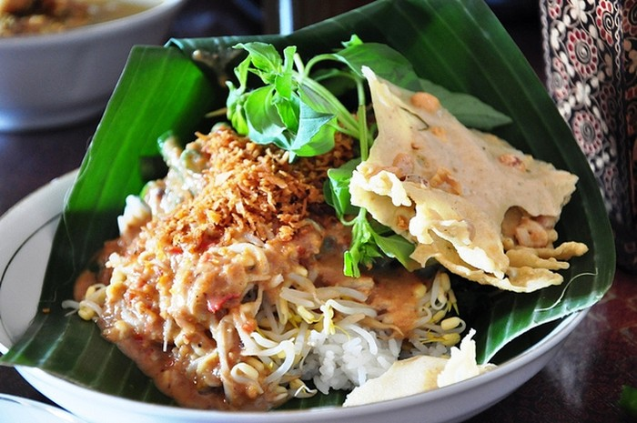
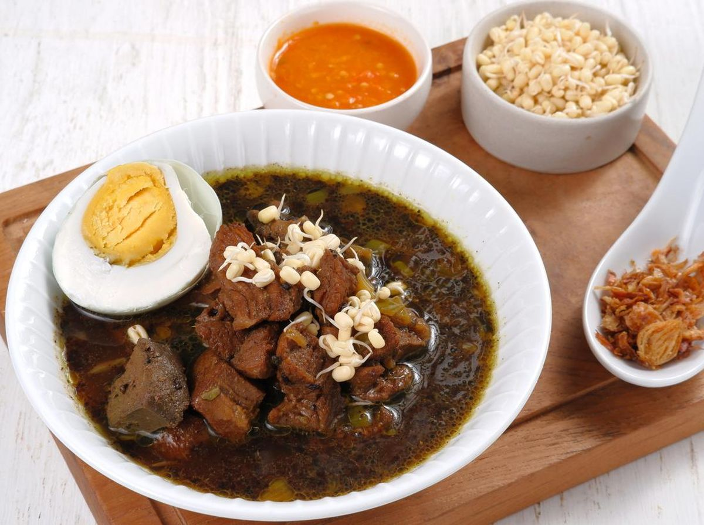

Keanekaragaman makanan di Mojokerto adalah cerminan dari kekayaan budaya dan sejarah panjang kota ini, yang erat kaitannya dengan kerajaan Majapahit serta keberagaman etnis dan budaya di sekitarnya. Sebagai kota yang menjadi bagian dari Jawa Timur, kuliner Mojokerto tidak hanya dipengaruhi oleh warisan lokal tetapi juga oleh perpaduan berbagai tradisi kuliner Nusantara. Hal ini terlihat dari ragam hidangan yang ada, mulai dari makanan berat hingga camilan tradisional, yang menawarkan cita rasa khas daerah dengan karakter kuat.
Mojokerto dikenal dengan makanan tradisional yang memiliki rasa autentik serta bahan-bahan lokal yang melimpah. Makanan khas seperti nasi wader, di mana ikan air tawar menjadi bahan utama, menggambarkan keterikatan masyarakat Mojokerto dengan sumber daya alam lokal, terutama dari sungai dan perairan tawar di sekitar wilayah tersebut. Begitu pula dengan sate keong dan berbagai jenis olahan tempe seperti botok, yang mengedepankan kekayaan bahan pangan lokal dalam kulinernya

Di sisi lain, keberadaan makanan ringan seperti onde-onde juga tidak bisa dipisahkan dari Mojokerto. Makanan ini telah menjadi ikon daerah, dan kehadirannya bukan hanya di pasar-pasar tradisional, tetapi juga merambah ke berbagai toko oleh-oleh yang menjadi daya tarik wisatawan. Kelezatan onde-onde Mojokerto, dengan rasa manis kacang hijau di dalamnya dan tekstur kenyal di luar, menunjukkan bagaimana kearifan lokal di bidang kuliner terus hidup dan diwariskan.

Tak hanya makanan tradisional, di Mojokerto juga terdapat banyak makanan yang mencerminkan asimilasi budaya dari daerah-daerah lain. Hidangan seperti soto daging misalnya, memiliki keunikan tersendiri dalam penyajian dan cita rasanya, menyesuaikan dengan lidah lokal meski berasal dari tradisi kuliner yang lebih luas di Jawa.
Keanekaragaman makanan di Mojokerto menjadi salah satu daya tarik utama bagi wisatawan yang berkunjung, serta menjadi bagian tak terpisahkan dari identitas budaya masyarakat setempat. Dengan kombinasi cita rasa tradisional, bahan lokal yang segar, serta sentuhan inovasi, kuliner Mojokerto menawarkan pengalaman yang unik bagi setiap orang yang mencicipinya. Kekayaan kuliner ini sekaligus menjadi bukti bahwa warisan budaya dan sejarah Mojokerto tidak hanya bisa dilihat melalui peninggalan fisik, tetapi juga melalui makanan yang diwariskan secara turun temurun.